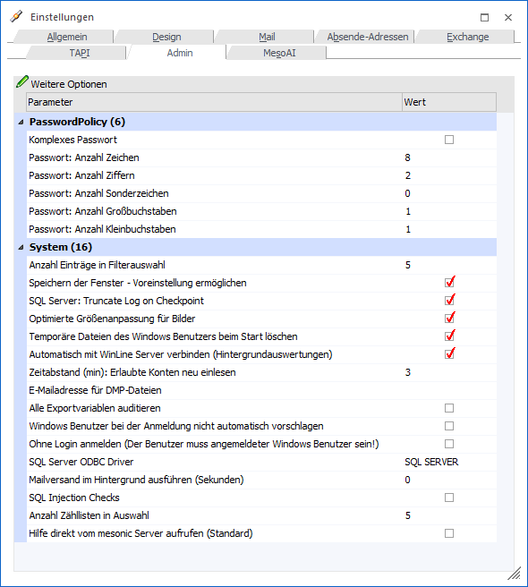

In dem Register "Admin" können systemweit geltende Einstellung getroffen werden.
Hinweis
Dieses Register steht nur WinLine Benutzern des Typs "Administrator" in vollen Umpfang zur Verfügung. Normale Benutzer können lediglich die folgenden Einstellungen verändern:
ü Optimierte Größenanpassung für Bilder
ü Temporäre Dateien des Windows Benutzers beim Start löschen
ü Automatisch mit WinLine Server verbinden (Hintergrundauswertungen)

Ø Komplexes Passwort
Wird die Option "Komplexes Passwort" aktiviert, so muss jedes neu vergebene Passwort eines WinLine-Benutzers standardmäßig aus mindestens 8 Zeichen, davon mindestens zwei Zahlen und mindestens einem Groß-, und einem Kleinbuchstaben bestehen.
Hinweis
Die Standard-Komplexität des Passworts kann in den nachfolgenden Zeilen ("Passwort: …") definiert werden.
Ø Passwort: Anzahl Zeichen / Anzahl Ziffern / Anzahl Sonderzeichen / Anzahl Großbuchstaben / Anzahl Kleinbuchstaben
Mit Hilfe dieser Felder kann genau definiert werden, welche Kriterien ein komplexes Passwort haben muss, damit dieses bei einer Neuvergabe akzeptiert wird.
Ø Anzahl Einträge in Filterauswahl
An dieser Stelle kann definiert werden, wieviel Filter in der Filterauswahl maximal zur Verfügung stehen sollen.
Ø Speichern der Fenster - Voreinstellung ermöglichen
Mit Hilfe dieser Einstellung kann definiert werden, ob der Voreinstellungs-Button grundsätzlich in der WinLine zur Verfügung stehen soll oder nicht. Wird die Checkbox deaktiviert, so kann die gleichlautende benutzerbezogene Einstellung im Register Allgemein nicht mehr aktiviert werden.
Ø SQL Server: Truncate Log on Checkpoint
Normalerweise werden Datenbankoperationen am SQL-Server mit Transaktionen durchgeführt. Abhängig von der Einstellung des Wiederherstellungsmodells der Datenbank werden die Transaktionen gespeichert oder nach der Beendigung der Transaktion wieder gelöscht. Beim Upsize von Datenbanken (das z.B. bei einem Update oder beim Kopieren eines Mandanten verwendet wird) wird vom Programm automatisch das Wiederherstellungsmodell auf "Einfach" zurückgesetzt (das wird beim Upsizen auch entsprechend protokolliert). Dadurch wird verhindert, dass alle Daten nicht auch noch zusätzlich in das Log geschrieben werden. Wird nun die Option "Truncate Log on Checkpoint" deaktiviert, wird das Wiederherstellungsmodell der Datenbank auch nicht umgestellt, sondern behält die getroffene Einstellung. Diese Einstellung wird systemweit gespeichert und verwendet (gilt für alle Benutzer).
Ø Optimierte Größenanpassung für Bilder
Für das Skalieren der Grafiken in Formularen kann hier die Checkbox "Optimierte Größenanpassung für Bilder" aktiviert bzw. deaktiviert werden. Standardmäßig ist die Checkbox aktiviert. Die Einstellung bewirkt, dass bei der Skalierung von Bitmaps in Auswertungen die Bitmaps mit einem speziellen Filter skaliert werden.
Ø Temporäre Dateien des Windows Benutzers beim Start löschen
Beim Arbeiten mit der WinLine werden in bestimmten Bereichen (Archiv, Export Daten, Excel-Ausgabe etc.) temporäre Dateien im Benutzerverzeichnis angelegt. Wenn dieses Verzeichnis nicht "aufgeräumt" wird, kann es dazu kommen, dass der Rechner "langsam" wird (aufgrund der vielen Dateien). Damit das nicht passiert, kann diese Option gesetzt werden, wodurch die von der WinLine angelegten temporären Dateien entsprechend gelöscht werden.
Ø Automatisch mit WinLine Server verbinden (Hintergrundauswertungen)
Wenn diese Checkbox aktiviert ist, dann wird automatisch beim Start der WinLine eine Verbindung zum WinLine Server hergestellt, um die Verbindung zum Server zu überprüfen. Wenn die Verbindung erfolgreich durchgeführt wurde, dann wird der Hintergrundauswertungs-Button in den Auswertungsfenstern freigeschaltet. Ist die Checkbox nicht aktiviert, stehen Hintergrundauswertungs-Button nicht zur Verfügung.
Hinweis 1
Die Checkbox-Einstellung wird benutzerspezifisch gespeichert, wobei wenn dies ein Administrator macht, die Option generell aktiviert bzw. deaktiviert wird (d.h. für alle Benutzer, außer, der Benutzer hat die Option schon individuell angepasst). Jeder normale Benutzer kann die Einstellung für sich wieder ändern. Standardmäßig ist die Checkbox-Option aktiviert.
Hinweis 2
Die Verbindung zum WinLine Server kann jederzeit im Fenster "Systeminfo" über den Button "Mit WinLine Server verbinden" (wieder) hergestellt werden. Die einmal hergestellte Verbindung (eine WinLine Server-Session) hat keine Auswirkung auf den Zustand der neuen Checkbox, d.h. wenn sie deaktiviert ist, bleibt sie auch weiterhin deaktiviert.
Ø Zeitabstand (min): Erlaubte Konten neu einlesen
Hier kann definiert werden, in welchem Abstand die "erlaubten Konten" eines Benutzers neu eingelesen werden sollen. Der Standardwert beträgt 3 Minuten.
Ø E-Mailadresse für DMP-Dateien
Sollte es in der WinLine zu einem Absturz kommen, so wird standardmäßig eine Meldung mit dem Text "Systemfunktion ist fehlgeschlagen" ausgewiesen und der Versand einer Email angeboten (Button "Mail senden"). Der Mailempfänger dieser Email kann an dieser Stelle hinterlegt werden.
Ø Alle Exportvariablen auditieren
Ist diese Checkbox selektiert, werden Änderungen aller Mandantentabellen automatisch auditiert. Diese Checkbox ist als Standard nicht aktiviert und muss manuell selektiert werden.
Ø Windows Benutzer bei der Anmeldung nicht automatisch vorschlagen
Existiert für den aktuellen Windows Benutzer ein gleichlautender mesonic Benutzer, so wird dieser standardmäßig während des Einlogvorgangs vorgeschlagen und mit Passwort versehen. Wenn dieses nicht gewünscht ist, so kann diese Option aktiviert werden.
Ø Ohne Login anmelden (Der Benutzer muss angemeldeter Windows Benutzer sein!)
Durch das Aktivieren der Checkbox "Ohne Login anmelden (Der Benutzer muss angemeldeter Windows Benutzer sein!)" kann die WinLine vollständig ohne Login gestartet werden. Der Benutzer muss dabei jedoch auf Ebene des Betriebssystems und der WinLine den identischen Namen tragen.
Beispiel
Lautet der Benutzername unter Windows "Vorname.Nachname", so muss beim WinLine Benutzer in der Benutzeranlage (WinLine ADMIN) ebenfalls der "." als Trennzeichen angewendet werden.
Ø SQL Server ODBC Driver
An dieser Stelle kann der ODBC-Treiber hinterlegt werden, über welchen die WinLine mit dem SQL-Server kommunizieren soll. In einer Auswahlliste werden hierfür die aktuell installierten Treiber angezeigt und können entsprechend gewählt werden.
Hinweis
Wird hier eine Änderung vorgenommen, so wird der gewählte Treiber in die mesonic.ini am Server gespeichert ([ODBC]Driver=). Von dort wird er beim Starten es Programmes auch geladen, wodurch alle Clients (inklusive WinLine Server) diesen Treiber verwenden.
Ist kein Treiber eingetragen, so wird von jedem Client der erste gefunden SQL Server-Treiber verwendet.
Ø Mailversand im Hintergrund ausführen (Sekunden)
Wenn bei dieser Funktion ein Wert in Sekunden hinterlegt wird, wird der Mailversand der gespeicherten SMTP-Mails in der angegebenen Frequenz automatisch im Hintergrund versendet. Dieser Wert ist im Standard innerhalb der CWL auf 0 gesetzt, da diese Automatik bereits jede 30 Sekunden (im Standard) über den WinLine Server geschieht, sofern dieser gestartet bzw. im Einsatz ist.
Wenn hier ein Wert innerhalb der CWL eingetragen wird, dann wird jede gestartete WinLine dieser Installation im angegebenen Intervall die Mails versenden. Die Option innerhalb der CWL darf nur bei Einzelplatzinstallationen eingestellt werden.
Hinweis
Nachdem ein Wert innerhalb der CWL eingetragen wurde, muss das Programm einmal neu gestartet werden, damit die Änderungen greifen und der Mailversand über einen Thread der CWL läuft. Die Option innerhalb der CWL darf nur bei Einzelplatzinstallationen eingestellt werden.
Diese Option ist unabhängig der CWL-Einstellung innerhalb der WinLine mobile (WinLine Server) im Register "WinLine Server" in den Einstellungen gesondert einzustellen. Dort ist der Standardwert 30 hinterlegt, somit werden jede 30 Sekunden die gespeicherten SMTP-Mails versendet, sofern der WinLine Server gestartet ist.
Ø SQL Injection Checks
Wenn diese Option gesetzt ist, wird bei jedem SQL-Befehlt innerhalb der WinLine geprüft, ob in dem Befehl ggf. ein weiterer, zusätzlicher SQL-Befehl (der eventl. auch Schaden anrichten kann) enthalten ist. Ist das der Fall, wir dann das Statement abgelehnt und ein entsprechender Eintrag ins Auditprotokoll Funktionen geschrieben.
Ø Anzahl Zählliste in Auswahl
An dieser Stelle kann definiert werden, wieviel Zähllisten in der Zähllistenauswahl maximal zur Verfügung stehen sollen.
Ø Hilfe direkt vom mesonic Server aufrufen (Standard)
Wenn diese Option gesetzt ist, wird die Hilfe als HTML Seite im Standardbrowser geöffnet.
Diese Einstellung ist standardmäßig aktiviert, wird hier eine Änderung vorgenommen, so wird diese für alle Benutzer übernommen, die noch keine eigene Anpassung vorgenommen haben.
Eine Änderung ist sofort wirksam, ein Neustart ist somit nicht notwendig.
Ist die Checkbox nicht aktiv, wird die lokale Hilfe (CHM-Datei) abgerufen.
Zu beachten ist, dass diese Art der Hilfe immer nur bei einem Update aktualisiert wird, wohingegen die HTML-Hilfe immer aktuell ist, auch wenn nicht die aktuelle Version der WinLine im Einsatz ist.
Hinweis
Diese Einstellungen greifen nur für die WinLine, in der MWL wird immer die NetHelp direkt vom mesonic Server aufgerufen.